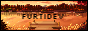

About me
My name is CENSORED and I do programming. I'm currently a student and I love recreational programming. I spend a lot of my free time thinking about projects and how to implement them.Personal stuff
I also like playing games (mostly indie) and watching movies & tv shows. I enjoy minimalist designs (example being this website) and pixel art. I love Biryani.Feeling:

Links
